Multicultural Knowledge and Information Literacy Learning Using AIoT Integration Technology
以虛實整合技術探討原民文化響應學習研究
以虛擬實境技術（VR）結合原住民的文化，應用在這個少數文化需要被重視以及保存的時代，把文化的保存數位化，能安全且完整留存完整物品，且能推動相關的教育。
運用虛擬實境的環境來設計，能以導覽及遊戲的方式來進行學習，進而推廣出部分少數民族的文化資產。
環境中能檢視或觀察族群相關的建築結構、圖騰，陶器等文物，同時做到數位留存及教育資源的提供。
分工：本人負責提供VR專案的建議與設計以及將VR專案裡的物件的進行3D列印。
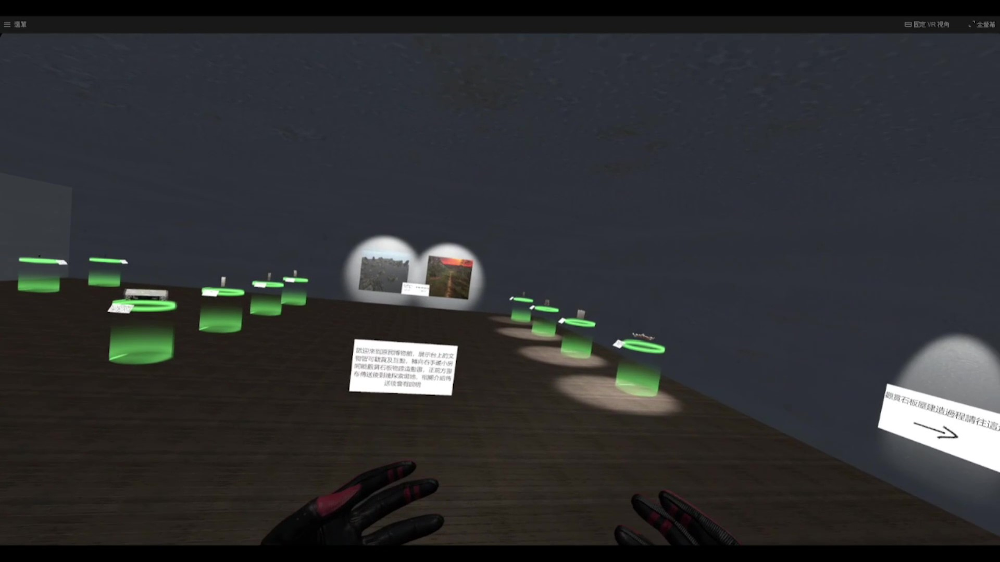以博物館的形式展示，物件可拿取以近距離觀看。
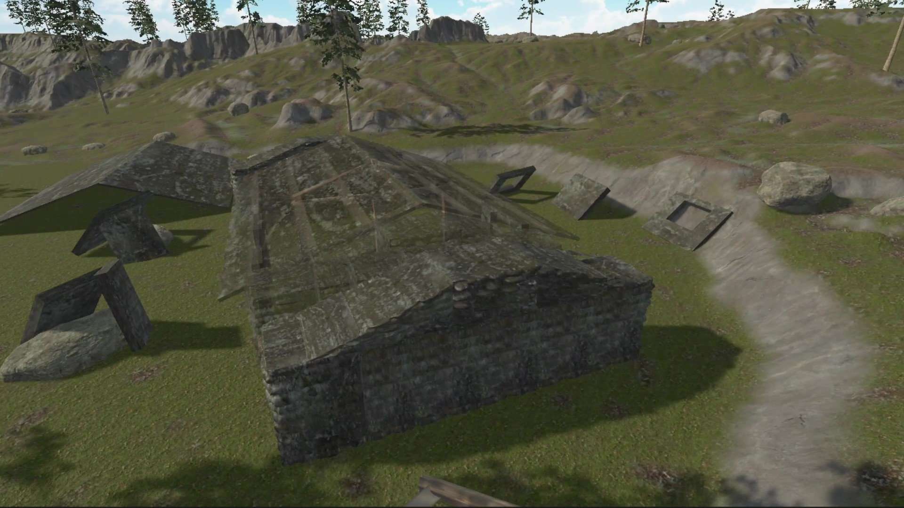組合石板屋場景。
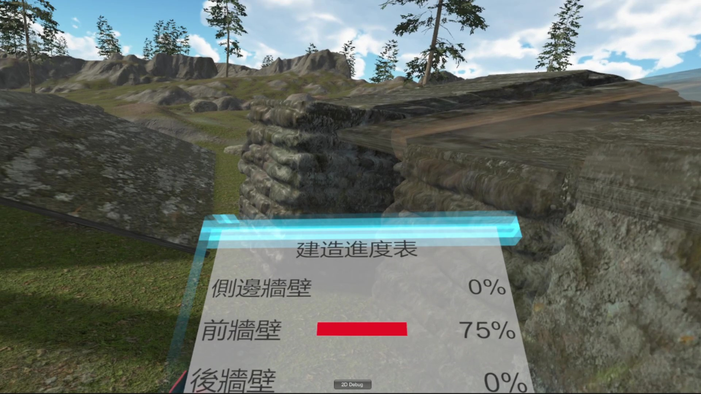左手上會有任務UI顯示當前進度。
依照網路上的教學寫出來後再修改而成的網頁。
一個簡單的註冊登入系統，用gin（網頁開發框架的package）處理連線的部分，有連接mysql並用gorm（物件關係對映處理的package），用來儲存註冊的帳號。
目前有3個身分組（一般使用者、版主、管理員），帳號資訊跟身分組放在不同table並用外鍵連接，在登入後會用session儲存帳號資訊，只有管理員才可使用後台管理功能。
目前後台管理只有顯示所有帳號資訊的功能。
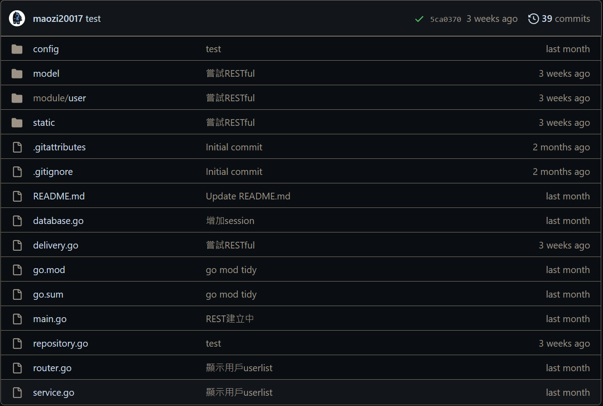有打算嘗試RESTful但失敗了，教學沒有完整解釋且教學的package已停止更新不再支援。
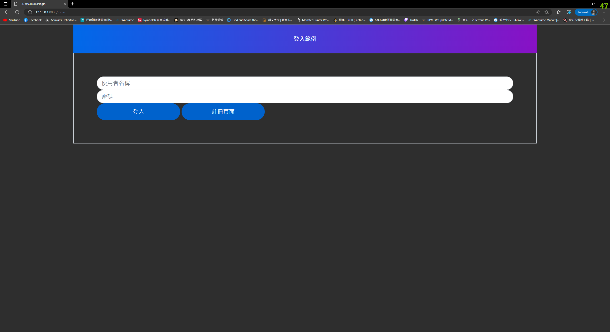 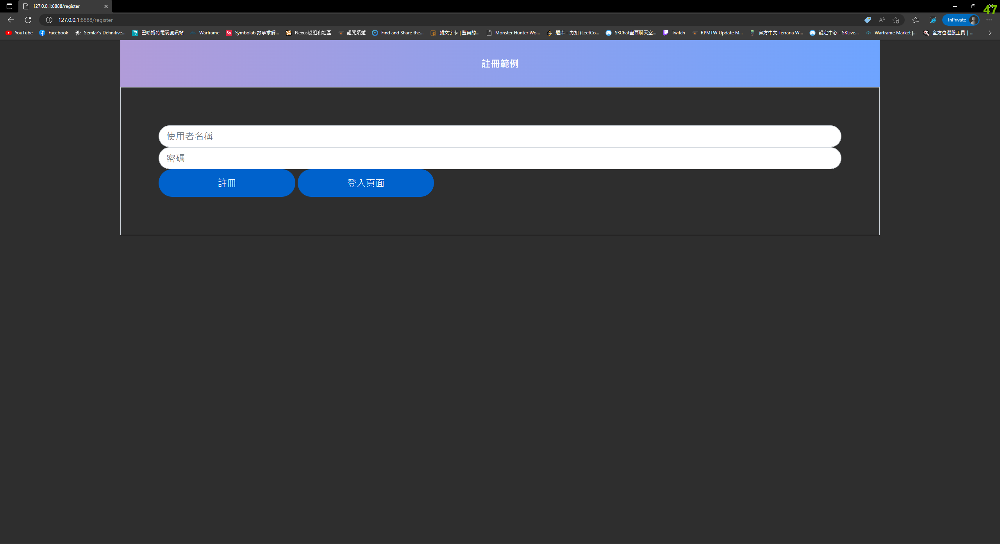教學只有登入功能跟介面，註冊是改出來的。
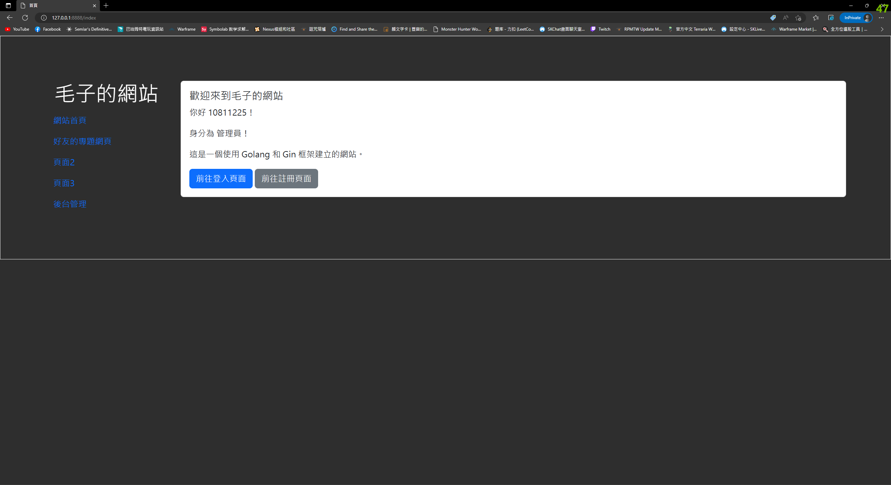歡迎的訊息會根據使用者登入的session有所變動。
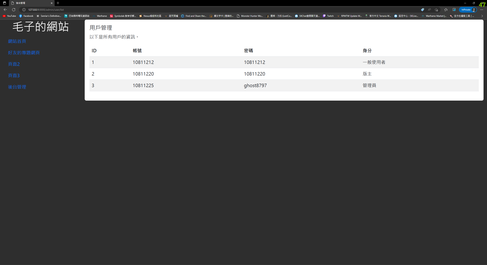後台管理的顯示帳號資訊功能。
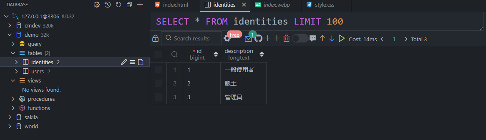\ 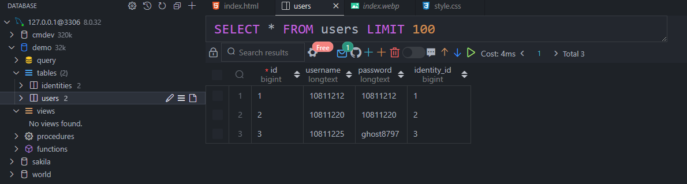mysql資料庫。
在我玩的遊戲中有一個小地圖，在遊戲中我需要測量我與敵人的距離，所以就寫了這個程式。
運作原理：先測量當前地圖一格的長度，輸入當前地圖的比例尺以算出一格長度是多少像素，然後在地圖起點（自己）和敵人的標記按下滑鼠中鍵測量出兩點距離多少像素，最後就可以得出距離。
但因為從設定初始長度到測量都是人工操作（用兩點鼠標計算距離），所以會有一定的誤差，距離不是十分準確。
原本打算用圖像辨識來讓測距自動化，但遊戲本身的設計會讓要辨識的物件閃爍導致辨識難度增加，因此還是以人工操作為主。
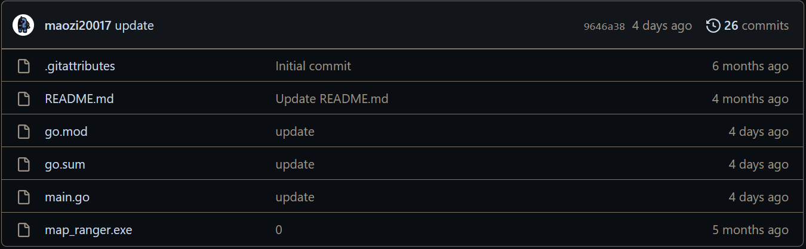這是我github上的第一個項目，當時還不知道go mod init這個指令所以沒有go.mod跟go.sum。
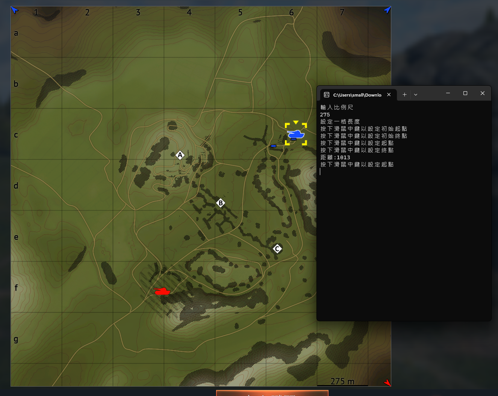執行畫面。
刷leetcode留下的紀錄，有程式碼以及題目連結，目前86題。
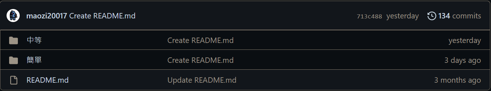 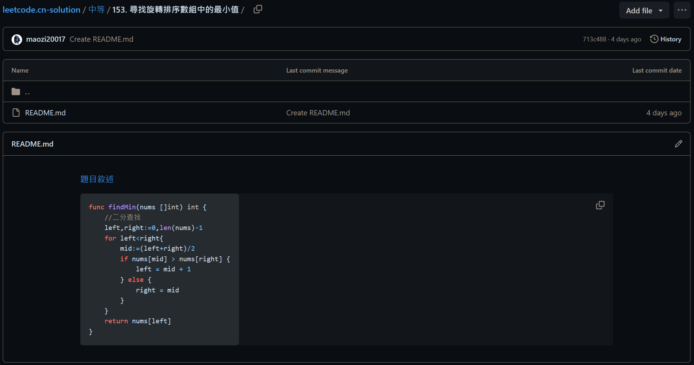個人履歷，也就是現在看到的這些，使用html和css完成，用github page發布。
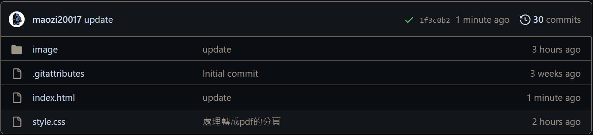如圖所示，目前只有用xml寫別人模組的漢化包，主要做的是把各個翻譯者的漢化包做個統整。
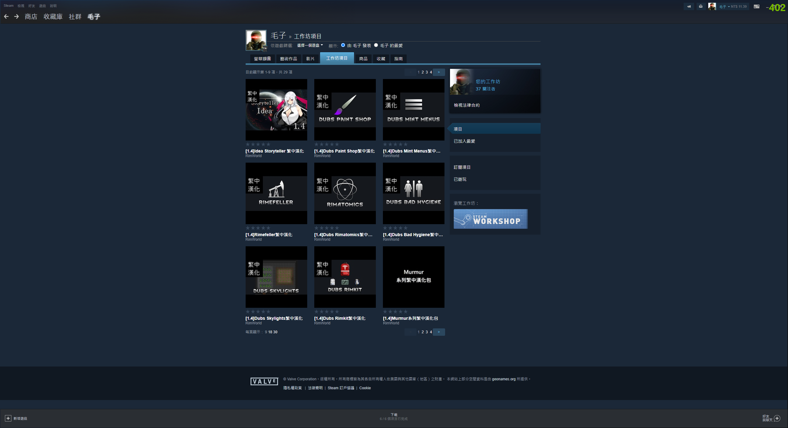 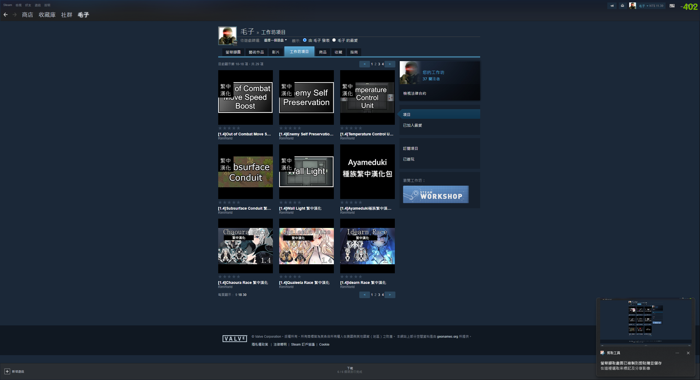 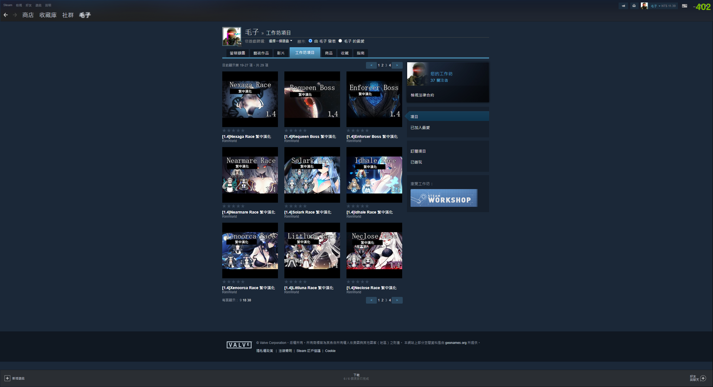 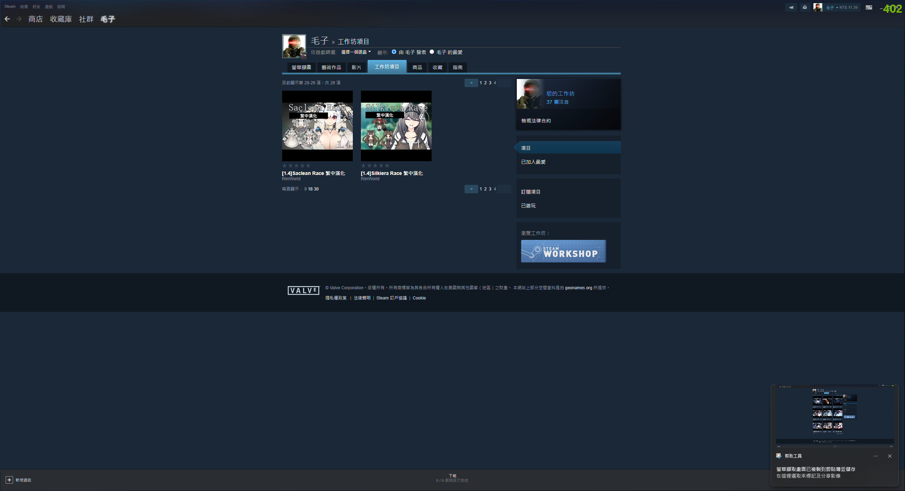在畢業專題中，我負責專題的指導和關卡設計。這個經驗讓我能夠提供公司新的創意和想法。
通過在GitHub上傳項目，我對版本控制有了初步的認識。這使我能夠參與公司專案的開發並提供協助。
在Steam工作坊上，我主要製作統整的項目，因此能夠與具有不同能力和專業的人合作。這樣的合作有助於擴展我的人際關係，並促進技能和知識的交流。